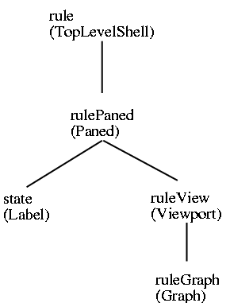
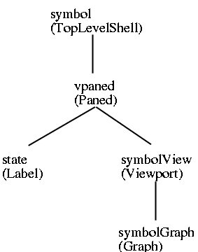
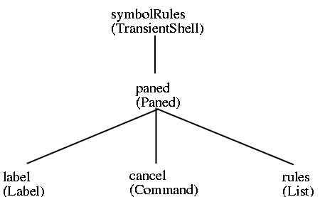
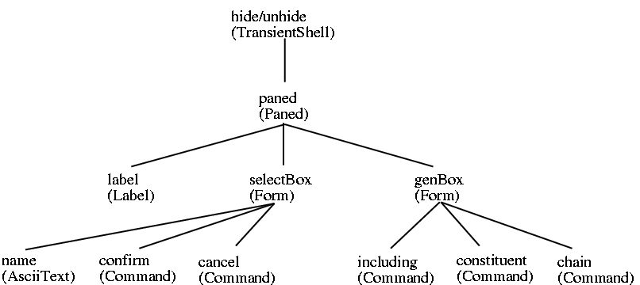
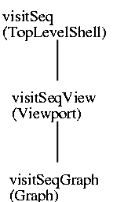
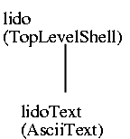

|
|
|
|
General Information
Tutorials
Reference Manuals
Libraries
Translation Tasks
Tools
Administration


|
GORTO - Graphical Order Tool
Layout AdaptationThe following describes the possibilities of adaptation of GORTO to personal preferennces. The adaptation of GORTO is done by the resource mechanism of the X-Window-System, which can't be explained in detail here. In this paper only specific details of the implementation of GORTO is considered. For common explanations of resources see the original literature.
Resources of GORTOGORTO uses several resources which are not related to any special widget. They rather have the status of globally used resources and are specified in the form of Gorto.Name. These are the following resources: Common adjustments
Name Class Default Meaning ---------------------------------------------------------------------------- sortProdList SortList False sorting production lists sortSymbolList SortList False sorting symbol lists leftSymbol LeftSymbol False imaging symbol graphs showPartDeps ShowPartDeps False showing partitioned dependencies makeTitleBars MakeTitleBars False producing titelspaces wmPushDown WmPushDown 0 Pushdown of Window Manager Filenames
Name Class Meaning ------------------------------------------------- lidoFile LidoFile LIDO-Input-File inputFile InputFile exp_idl-Input-File outputFile OutputFile ord_idl-Output-File lclFile LCLFile LCL-Output-File Layout of dependency graphs
Name Class Default Meaning ----------------------------------------------------------------------- boldFont Font fixed font for symbol names attributeFont Font fixed font for non-critical attributes criticalFont Font fixed font for critical attributes textPadding Padding 2 free pixel around strings synthesizedIndent Indent 15 indentation of synthesized attributes symbolvPadding Padding 10 vertical space between symbols symbolhPadding Padding 5 horizontal space between symbols arrowWidth ArrowWidth 3 width of arrows arrowHeight ArrowHeight 9 hight of arrows arrowLength ArrowLength 30 minimal length of arrows depColumnWidth DepColumnWidth 3 width of column of dependencies depFaseLength DepFaseLength 5 length of bends in dependencies selectWidth SelectWidth 3 selection width of dependencies Colours
Name Used for --------------------------------------------------------- directDepColor direct dependencies inducedDepColor induced dependencies arrangedDepColor added dependencies arrangedInducedDepColor induced added dependencies partitionedDepColor partitioned dependencies inducedPartitionedDepColor induced partitioned dependencies attrColor attributes includingAttrColor attributes produced by INCLUDING constituentAttrColor attributes produced by CONSTITUENT(S) chainAttrColor attribute produced by CHAIN symbolColor symbol names visitColor VISIT-Operations conditionColor CONDITION-Operations lineColor frame resp. cutlines Strings
Name Default ---------------------------------------------- emptyListString (empty) directRuleState direct rules directSymbolState direct symbols optionState order options transitiveState transitive graphs inducedState induced graphs arrangeOptionState arrange option arrangedState arranged graphs partitionState partitions partitionedState partitioned graphs visitSeqState visit sequences lifetimeState lifetimes infoState display information hideState hide attribute unhideState unhide attribute directDisplay direct display transitiveDisplay transitive display inducedDisplay induced display arrangedDisplay arranged display partDisplay partition display visitSeqDisplay visit sequence display constructIDLState idl structure ouputState output files noRecomputeString not necessary ruleString rule symbolString symbol transferString transfer dependency includingString including dependency constituentString constituent dependency chainString chain dependency unknownDepString unknown dependency cyclicString cyclic arrangedString arranged changedString changed partitionedString partitioned visitSeqString visit-sequence forcedString forced cycleMessage would yield cycle noBmNFMessage no BmNF occurrence
Internal Interface StructureTo allow sensible specification of resources the following internal interface structure of GORTO is given. The widgets used by GORTO are Athena widgets of the X Version 11, Release 4. The main window of GORTO shows the following widget structure:
Structure of Rule- and Symbol windows:   Structure of the window to select the according rules in symbol windows:  Structure of the dialogue window to hide attributes:  Structure of visit-sequences, Lido-source-text and announcements:


Graph WidgetThe graph widget is a widget adapted to GORTO. It is used to describe different dependency graphs. It uses the widget class Core and doesn't provide new resources for the adaptation of the graph widget. The adaptation of graph widgets is done by certain actions at certain events. This binding up is done with the so called binding translations. For their description see the original literature. Two actions are available: menu-popup() and select(). The action menu-popup() is used to call the menus within the dependency graphs and expects the internal name of a menu as a parameter. The action select() is used for adaptation of mouse and keyboard handling within dependency graphs. It accepts the following parameters which stand for user-commands described above:
Name Objects possible contexts ------------------------------------------------------------- FOLLOW dependencies symbol, rules FOLLOW-AND-CLOSE dependencies symbol, rules FOLLOW-MARKED dependencies symbol, rules REMOVE added dependencies symbol, rules HIDE attributes symbols, rules, visit-sequences UNHIDE attribute symbols, visit-sequences MOVE attribute symbols, visit-sequences SPLIT-PARTITION attributes symbols APPEND-PARTITION attributes symbols The action select() is normally bound to the use of the mouse. Up to three parameters can be called to state the action to be executed depending to the selected object. If more than one parameter is given for the same object, only the last action will be executed the others are ignored. The default paramters for the graph-widget is the following:
<Btn3Down>: menu-popup(mainMenu) \n\ <BtnDown>: select(FOLLOW) \n
|


![[Hierarchy]](gifs/hierarchy.gif)
![[Announcement]](gifs/message.gif)